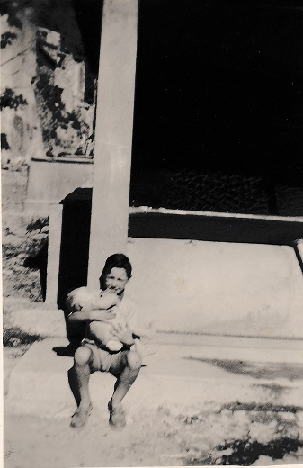
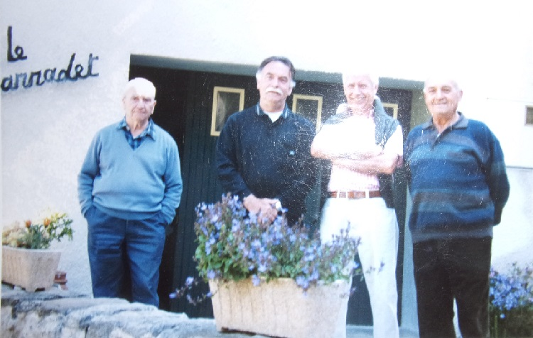

Rose est née à St Martin, de Raymonde Teisseire et Georges Marcerou son époux ; deuxième enfant de la famille, on lui a donné, comme le voulait la tradition familiale, les deux prénoms de ses grand-mères Rose et Marie.
Rose-Marie dans les bras de son frère au lavoir
On peut apercevoir à l'arrière le parapet de l'ancienne fontaine aux ânes (et tétard)
voir plus bas
Ses parents s'étaient rencontrés à l'usine à chapeaux de Jean Bourrel à Quillan, lorsqu'ils y travaillaient tous les 2.
Sa maman venait de Ginoles, orpheline de ses deux parents à neuf ans, père mort à la guerre et mère de maladie.
Son papa, de l'ancienne famille martinlysoise des Marcerou, famille dont on retrouve le nom dès le premier registre paroissial de 1660 et qui a donné naissance à de nombreux maires du village ; d'ailleurs son propre père Grégoire a longtemps exercé cette fonction.
Ce grand-père paternel de Rose était le cordonnier du village et exerçait sa profession dans la maison qui a vu naître Rose appelée "La boutique". Grégoire montait fréquemment jusqu'à Quirbajou pour vendre ses chaussures. Si ses créations trouvaient souvent acquéreurs, il était beaucoup plus complexe de se faire payer : "Je te payerai plus tard, pour l'instant j'ai pas de sou"... expression qui est restée dans la famille.
Quand à son père Georges, après avoir quitté l'usine à chapeaux, il est devenu menuisier à Quillan dans l'entreprise Gaxieu, en face de la Forge. Ceci avant de rentrer dans la nouvelle usine de Dolomie qui venait de s'installer à Saint Martin. Cette usine n'était encore que partiellement automatisée aussi le transport de sac de pierres, concassées ou non, se faisait à dos d'homme. Cette usine dans les années 1960 tournait 24 h / 24 avec des équipes faisant les 3/8 (3 équipes travaillant 8 heures par jour chacune)

La famille Marcerou près de la maison familiale, Rose-Marie est la jeune fille à gauche
la fontaines aux ânes avait déjà été remplacée par une fontaine verte en fonte moins "encombrante" (plus de tétard...)

Rose-Marie et son chien Briquet à coté de la voiture familiale
En 1975, suite à l'arrestation et l'incarcération du maire de St Martin Albert Lefrançois, Georges, alors premier adjoint, a été désigné par le conseil municipal pour le remplacer. Il a occupé cette fonction de maire pendant 20 ans, puis a cédé sa place à son neveu Emile Rios
Georges Marcerou et Emile Rios, La photo présente également un de mes grands oncles Henri Mounié
Rose est allée très jeune à l'école de Saint Martin, même avant d'en avoir le droit. Mais elle avait tant réclamée en voyant son frère et les autres enfants du village aller dans ce lieu mystérieux d'en bas du village.
Une fois acceptée, plus possible de reculer même si finalement ce n'était pas aussi magique qu'espéré... Rose a bien essayé de se faire porter pâle, de simuler des maux de tête, mais son père était intransigeant "Tu as voulu y aller, maintenant tu y vas"

Rose-Marie en classe à St Martin
Pendant ses années d'école à St Martin, Rose a connu deux institutrices,
- Paquerette Bonnet, qui vivait avec son mari dans le logement de fonction et avait une fille devenue médecin à Toulouse(?),
- Simone Maury, hébergée par sa mère à Quillan,
Cette dernière était en poste lors de la fermeture de l'école ;
fermeture qu'a subi Rose alors qu'elle était la dernière et seule élève de l'établissement pendant toute l'année scolaire 1970/1971.
Rose est restée à Saint Martin jusqu'à ses 19 ans, puis est partie habiter avec son mari Jean Louis à Quillan, mari qu'elle a connu à St martin à l'age de 17 ans où il venait à la pêche.
Elle a été mariée par son père à la mairie de St Martin
Aujourd'hui, maire à son tour, Rose ramène souvent sa mère au village pour que celle-ci retrouve ses marques.
Rose y reçoit ses petits enfants qui adorent se promener le long de la rivière.
Avec Jean Louis, elle parvient à faire retrouver toute sa propreté au village.
Quelques anecdotes d'enfance :
Presque chaque année des militaires faisaient des manœuvres autour du village ; avec leur jeep ils remontaient le chemin de planèses. Phénomène étrange, il n'était alors pas rare de capter les émissions radio de ces soldats sur le vieux poste de télévision. Après leur passage, souvent on retrouvait des cartouches à blanc laissées dans la nature, Mais ce fut quand même une surprise de voir un jour revenir, Félicie couverte de plâtre... Elle avait trouvé et dégoupillé une grenade qui avait été laissée là.
Cette même Félicie qui avait organisé l'expédition vers la croix au dessus du village qui nous avez vu nous perdre en voulant prendre un raccourcis "plus direct" que de revenir par le chemin que nous avions emprunté à l'allée.
Les canaux d'irrigation, Rose se souvient de les avoir vus en fonctionnement et se propose de chercher celui dont elle se souvient le mieux.
En haut du village, il y avait une fontaine : cette fontaine enlevée par Albert Lefrançois, permettait d'abreuver les ânes, il ne reste plus que les traces de calcaire à son emplacement. Dans son bassin, Rose y élevait ses têtards.
Des souvenirs de la fête que constituait de tuer le cochon, Rose ne garde que de se boucher les oreilles pour ne plus entendre les cris de la bête et la position suspendue tête en bas de la carcasse.
Les vendanges des vignes de Raphël et de Castella rassemblaient le village sur la place de la batteuse où les hommes se déchaussaient pour écraser le raisin rapporté dans de grandes comportes. Une partie de ce raisin avait-elle traversé la rivière sur un câble tendu entre les 2 rives de l'Aude ?
Sur cette place, la dite batteuse en bois permettait de trier les lentilles ramenées de Planèses.
Dans de grands paniers d'osiers, pratiques pour nettoyer le blé, avec leur 2 anses ressemblant à des oreilles... on mettait à ras bord des oreillettes, ces fines lamelles de pâte frites et sucrées qui faisaient les délices des enfants, cuites dans la grande marmite sur le feu à bois... quand le chien Briquet n'avait pas englouti toute la pâte crue.
Autre sucrerie, les confitures faites avec les abricots de l'arbre planté après les ruines du monastère sur un des terrains distribués lors du partage du terrain du couvent.
La pêcherie qu'avait imaginée Albert Lefrançois, vite reprise par la propriétaire du lieu qui, après s'être fâchée avec celui-ci, avait préféré faire don de ses terrains à la commune de Quillan plutôt qu'à St Martin.
Les fêtes du 11 novembre (Fête du village pour la Saint Martin et son été tardif) avec leur orchestre, et ceux qui venaient sur la place vendre leurs Merguez : Cacahuète Journet ou Réolly. Toute la famille se retrouvait à cette occasion, même l'oncle Auguste de Bordeaux.
Munoz, le dernier épicier ambulant à s'être arrêté au village qui venait d'Espéraza dans sa camionnette en tôle ondulée, mais y avait-il au village suffisamment de clients pour pérenniser ce commerce ?